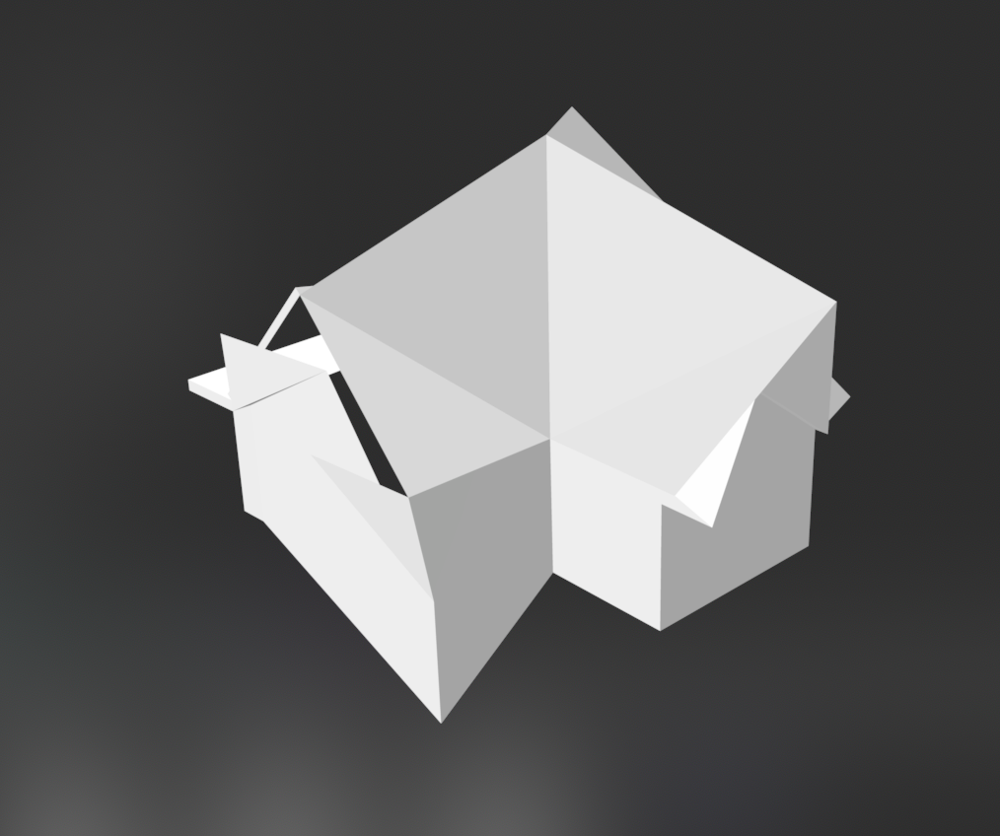
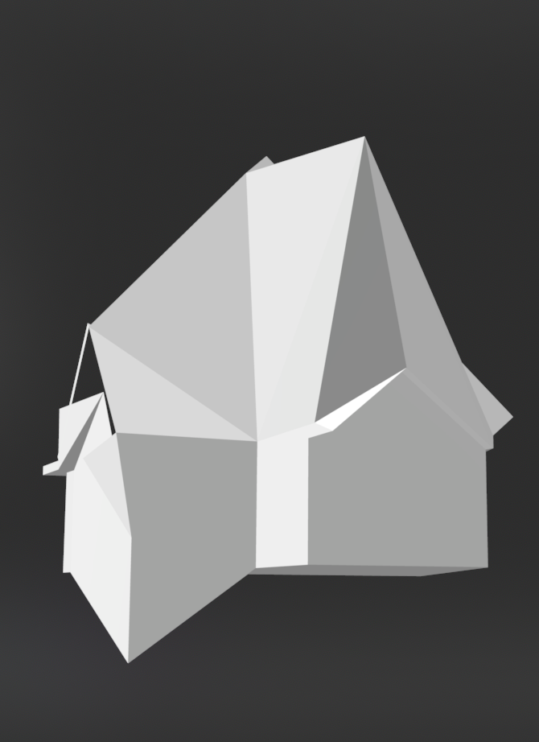
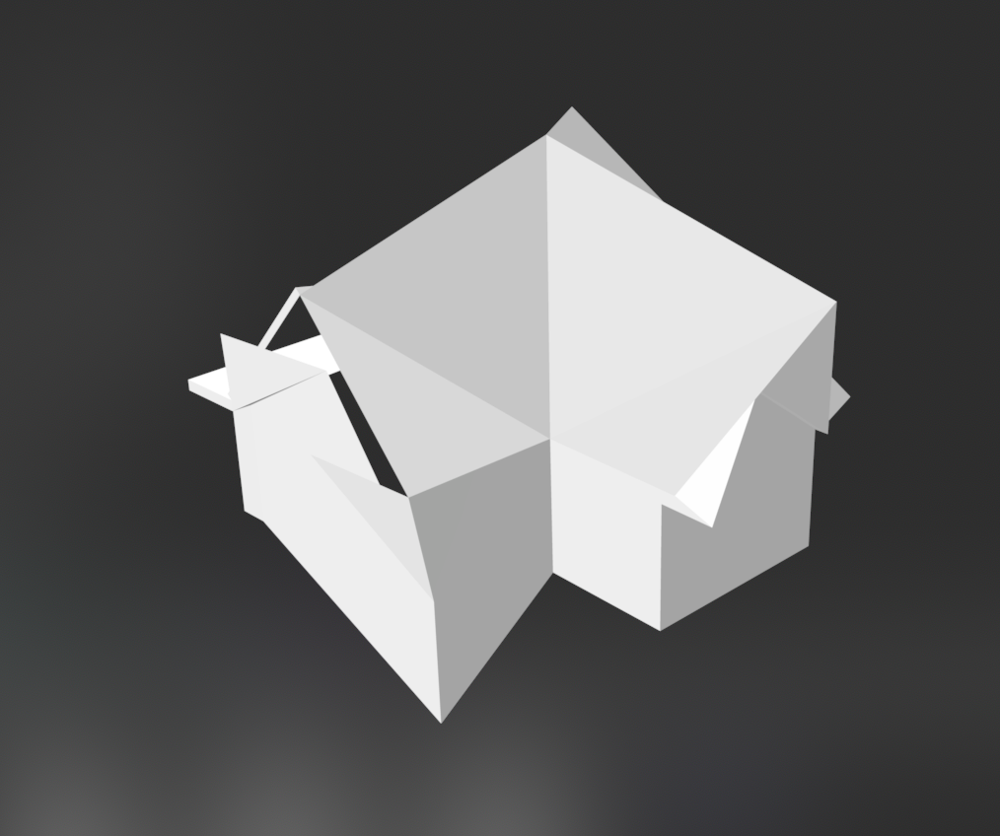
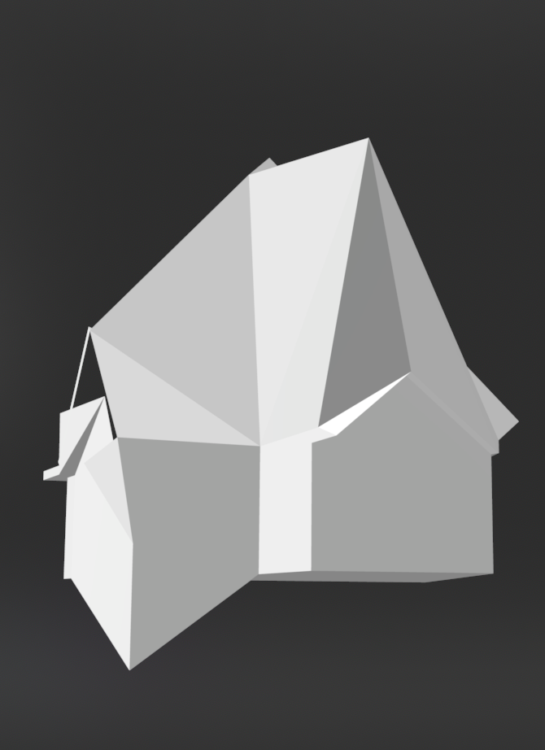

many Remnants choose to build a structure. it can help with the adjustment to a new environment, or is more comfortable for some.
typically, the Remnant, or Remnants, who build the structure don't live in their own builds for very long.
you'll get used to the pattern of things.
many Remnants will reside in the builds, but most are abandoned, and await an eventual system failure and corruption.